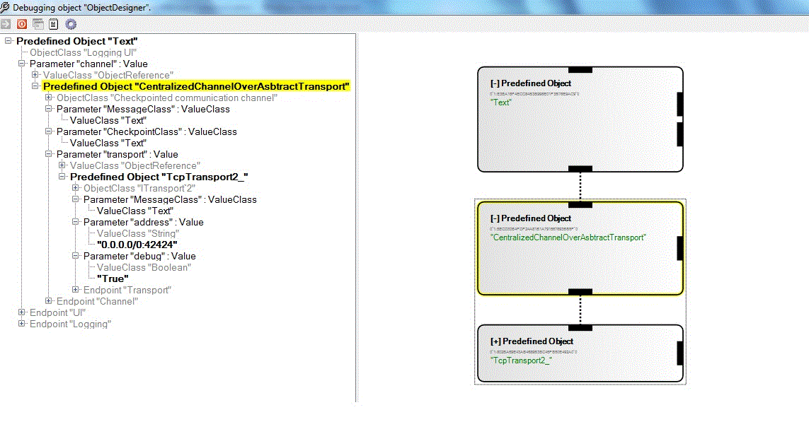
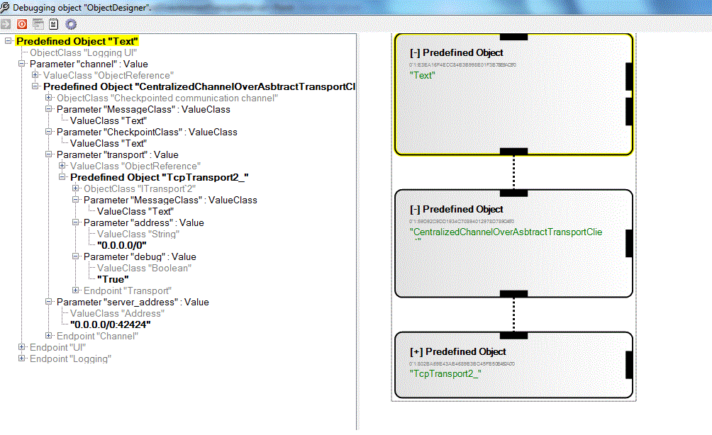

The component is configured to use simple transport like Tcp Transport2 to build centralized server with a checkpointed communication channel (CC), that can accept connections from CC's clients. The server listens on a known port 42424 and clients connect to it. Whenever server gets new connections it ask for checkpoint from a component and relays it to the new connecting client. The server also relays messages to everyone connected.
  Basic Setup to runExample
CentalizedChannelOverAbstractTransportServer.liveobject is the server object and CentalizedChannelOverAbstractTransportClient.liveobjects is the client object.
“CentalizedChannelOverAbstractTransport_” component uses TcpTransport2_ component to abstract the TCP connection functionality. TcpTransport2_ typical accept ip:port combinations, but also allows you to specify a subnet you wish to listen on. For our purposes, anything will do, so we listen on 0.0.0.0/0:42424 (any subnet). The port is this case is 42424.
The “Text” component connected to “CentalizedChannelOverAbstractTransport” component is basically used for checkpointing. Whenever server gets new connections it ask for checkpoint from "Text" component and relays it to the new connecting client.